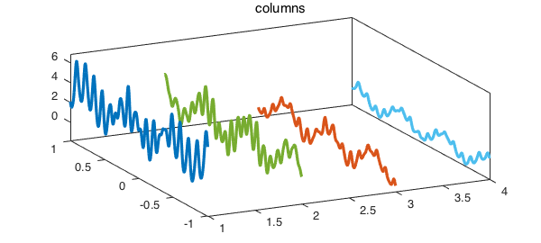
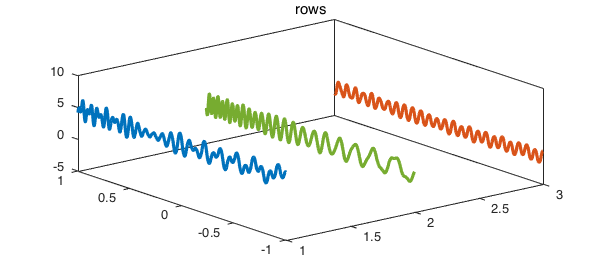
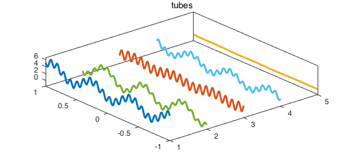
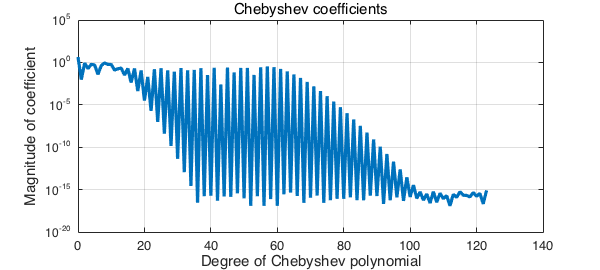

Stan Wagon [1] suggested the problem of finding the global minimum of the following 3D function
ff = @(x,y,z) exp(sin(50*x)) + sin(60*exp(y)).*sin(60*z) + ...
sin(70*sin(x)).*cos(10*z) + sin(sin(80*y)) - sin(10*(x+z)) ...
+(x.^2+y.^2+z.^2)/4;
f = chebfun3(ff)
f = chebfun3 object cols: Inf x 4 chebfun rows: Inf x 3 chebfun tubes: Inf x 5 chebfun core: 4 x 3 x 5 length: 666, 1054, 124 domain: [-1, 1] x [-1, 1] x [-1, 1] vertical scale = 6.9
An alternative way of constucting $f$ is to call f = cheb.gallery3('wagon'). The minimization problem is easy to solve in Chebfun3 [2].
tic, min3_f = min3(f), toc
min3_f = -3.328338345663268 Elapsed time is 1.720078 seconds.
Here we are interested in the Tucker representation of this function. As we see in the above display, $f$ has numerical trilinear rank (4, 3, 5) which means that we need 4 columns, 3 rows and 5 tubes to represent it roughly to machine epsilon (the default value of chebfun3eps). We first plot the four columns:
x = chebfun('x'); one = 1 + 0*x;
[r1, r2, r3] = rank(f);
for j = 1:r1
plot3(j*one,x,f.cols(:,j),'linewidth',1.6), hold on
end
title('columns'), axis tight, box on, view([-26 44]), hold off

Here is a plot of its three rows:
for j = 1:r2
plot3(j*one,x,f.rows(:,j),'linewidth',1.6), hold on
end
title('rows'), box on, view([-39 43]), hold off

The five tubes of the function look like the following.
for j = 1:r3
plot3(j*one,x,f.tubes(:,j),'linewidth',1.6), hold on
end
title('tubes'), axis tight, box on, view([-40 68])

The last one is not actually close to a constant in a relative sense. Here are its values at $z=-1$ and $z = -0.2$.
format short, f.tubes(-1, end), f.tubes(-0.2, end),
ans =
0.0216
ans =
-0.1133
We should make two comments about these images. The first concerns the difference between the ranks of a multivariate function, which in this case are very small (just $4, 3, 5$), and the complexities of its univariate pieces, which in this case are not so small. The columns, rows, and tubes we have displayed require Chebyshev series of considerable length to be represented. For example, here are the absolute values of the coefficients of the the Chebyshev series for the first of the tubes:
clf, plotcoeffs(f.tubes(:,1))

What's going on here is that Wagon's function is of low rank for algebraic reasons, not because it is in every sense very simple. And this brings us to our second comment. If you draw plots like those we have shown here for an arbitrary function, you may find that they look very different and not very interesting -- most of the curves will seem to be zero. That's because for most functions, the mathematical rank is infinite and it's only the numerical rank which is finite. In such cases there will be a decaying series of "pivots" involved in the Chebfun3 representation. If you plot the associated columns/rows/tubes as we have done, you will find they are on all different scales going down to 1e-15. To get interesting plots you will have to rescale the curves individually.
References
-
F. Bornemann, D. Laurie, S. Wagon, and J. Waldvogel, The SIAM 100-Digit Challenge: a Study in High-Accuracy Numerical Computing, SIAM, 2004.
-
B. Hashemi, L. N. Trefethen, Chebfun in three dimensions, submitted, 2016.